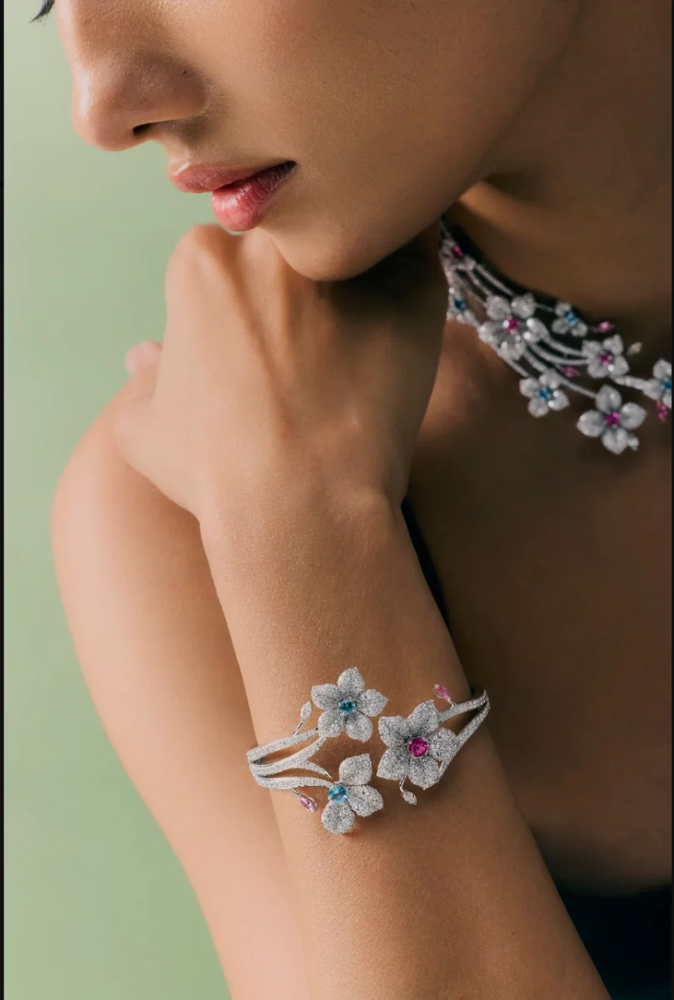
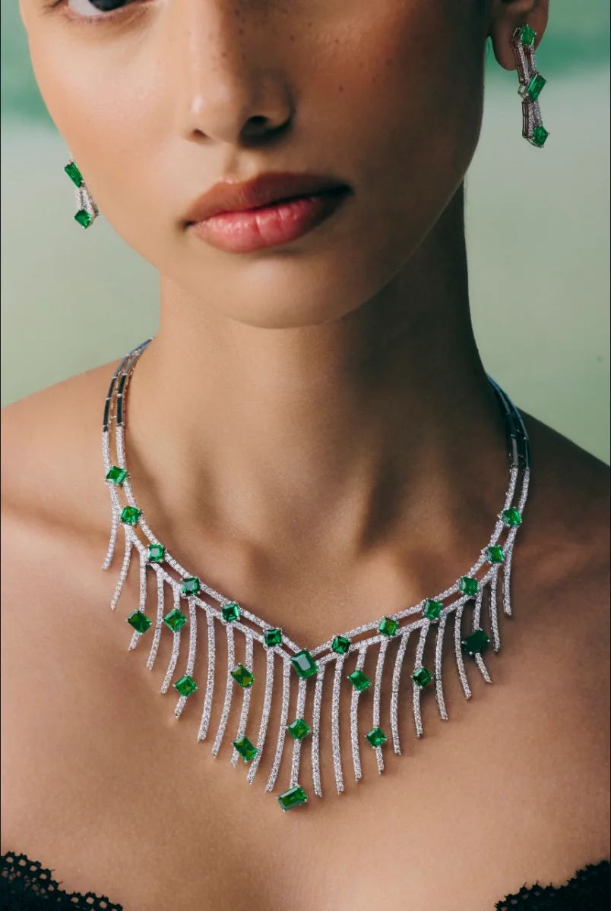

Character
What the stone carries of where it came from.
An introduction
A stone is read in six ways, and felt in one.
The allure of a precious stone lies in its colour, tone, saturation, inclusions, character and clarity. Alongside colour, cut, clarity and carat weight sit a stone's symbolism and its personality — the six Cs. Expert opinion will take you a long way. It will not measure what you feel when you see the stone.
01 — Cut proportions and light
A cut is a shape and a set of dimensions — the depth, the angles, the symmetry of every facet. It decides what the stone does with light.
White light enters the stone. Some rays reflect outward; others are absorbed, and what is absorbed is what gives the gem its body colour. The rest is returned to the eye.

02 — Three dimensions of colour
Colour has three parts. With a transparent stone it helps to picture them as a globe: hue around the equator, tone from pole to pole, saturation out from the core.
The most desirable colour sits at the equator — a medium tone, held at high saturation.

03 — Pleochroism
A doubly refractive gem shows different colours from different angles. Tanzanite is the example everyone reaches for.
A lapidary with the skill can orient the cut to quiet the effect — so the stone shows its full colour face up, with little or no secondary hue.

The measure of a stone
What the stone carries of where it came from.
Hue, tone and saturation, read together.
The inclusions, and what they tell you.
Depth, angle and symmetry — the light's path.
Weight, which is not the same as size.
The report, and any treatment disclosed.
Tanzanite knowledge
The only source of this stone is a few square kilometres at the foot of Kilimanjaro. Tanzania tells it as the Maasai do: a thunderbolt came down, struck the earth, and turned the rock a glistening blue. That was the birth of tanzanite.
Shafts follow the seam down by hand. Every stone that leaves the block is logged where it was found, which is how a piece can still name its own ground years later.
The rough is read before anything is taken off it. Orientation decides the colour you will see face up — which is why the cut is set by the stone rather than by the yield.
Colour, clarity, cut and carat, recorded against the same scale every time, so two stones from two years apart can still be compared honestly.
The East African belt
Begin with the blue
Enter Tanzanite